Sistema de Gestão de Restaurantes (SGR)
Este sistema foi desenvolvido para facilitar o controle operacional de restaurantes de pequeno a grande porte. O sistema oferece funcionalidades como controle de pedidos, gestão de estoque, visualização de relatórios financeiros, gerenciamento de equipe e muito mais.
Tecnologias utilizadas
- PHP com Laravel: Linguagem de programação back-end amplamente utilizada na web, com o Laravel oferecendo um framework moderno e robusto para desenvolvimento rápido, seguro e estruturado de aplicações web.
- Banco de dados MySQL: Sistema de gerenciamento de banco de dados relacional usado para armazenar e organizar todas as informações do sistema, como pedidos, produtos, usuários e relatórios.
- JavaScript e AJAX: JavaScript é uma linguagem de programação voltada para o front-end interativo. Com o uso de AJAX (Asynchronous JavaScript and XML), o sistema realiza requisições assíncronas ao servidor, permitindo uma experiência mais fluida e sem recarregamento de página.
- HTML e CSS: HTML estrutura todo o conteúdo da interface do sistema, enquanto o CSS estiliza os elementos com cores, espaçamentos, animações e responsividade, garantindo uma interface moderna e adaptável a qualquer tela.
Galeria do Projeto
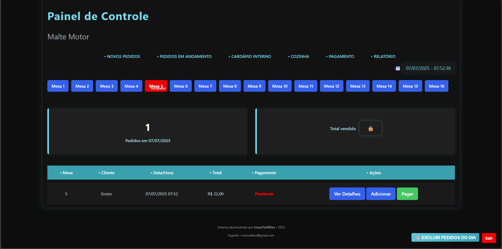
 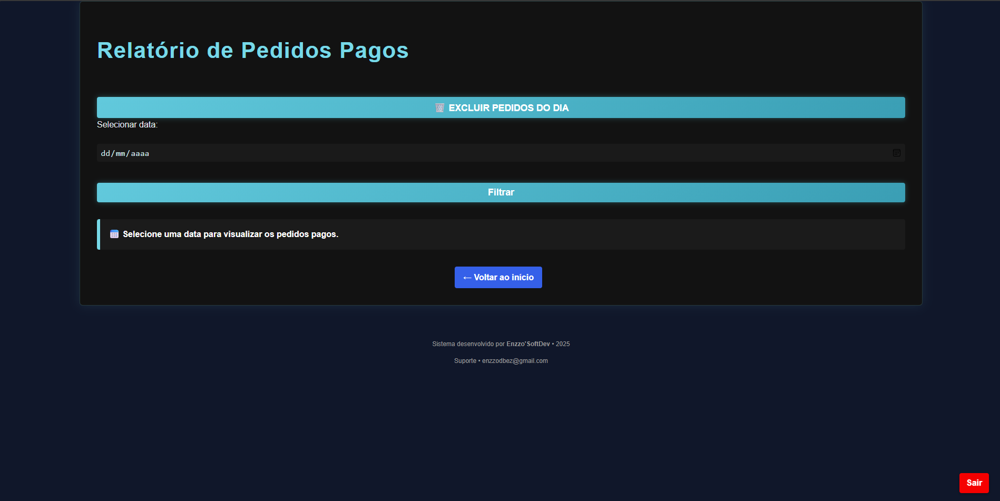
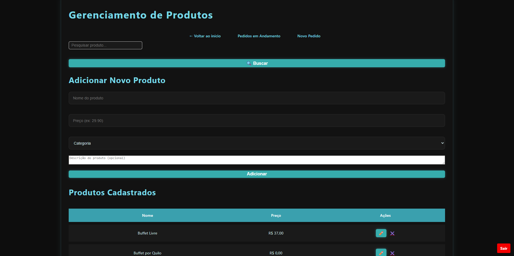
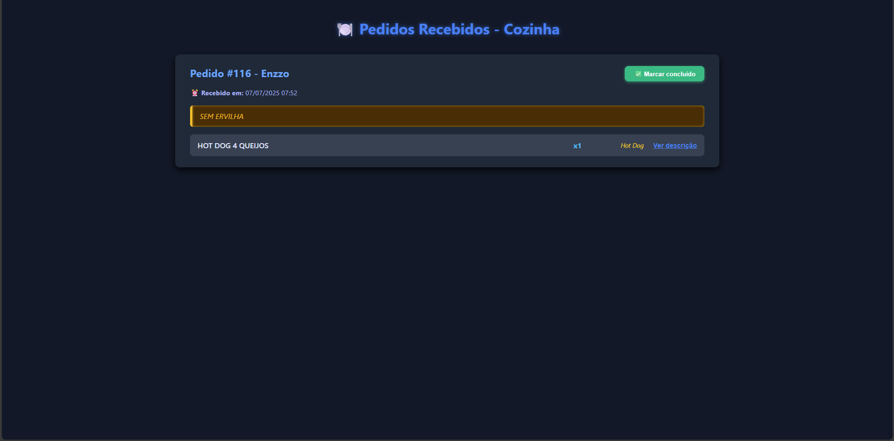
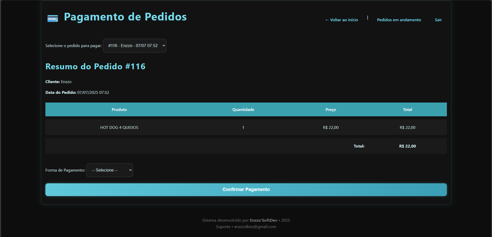
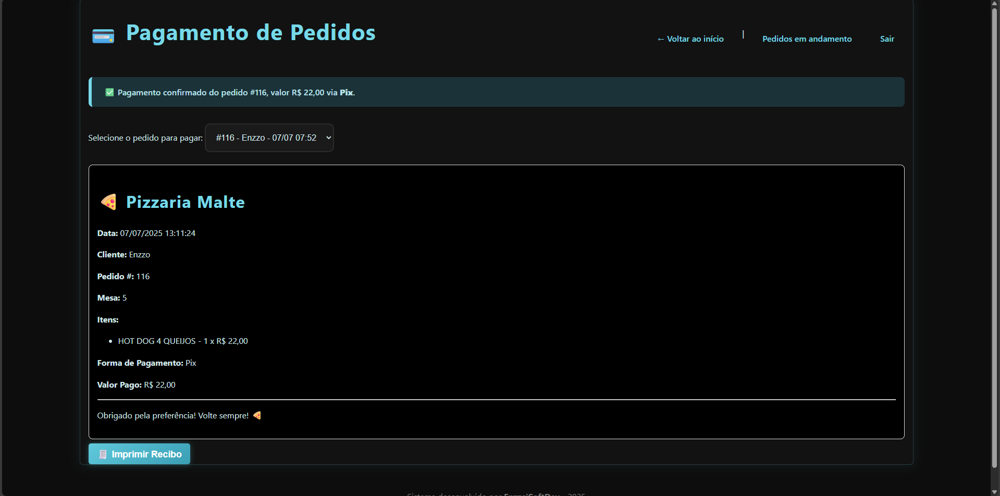
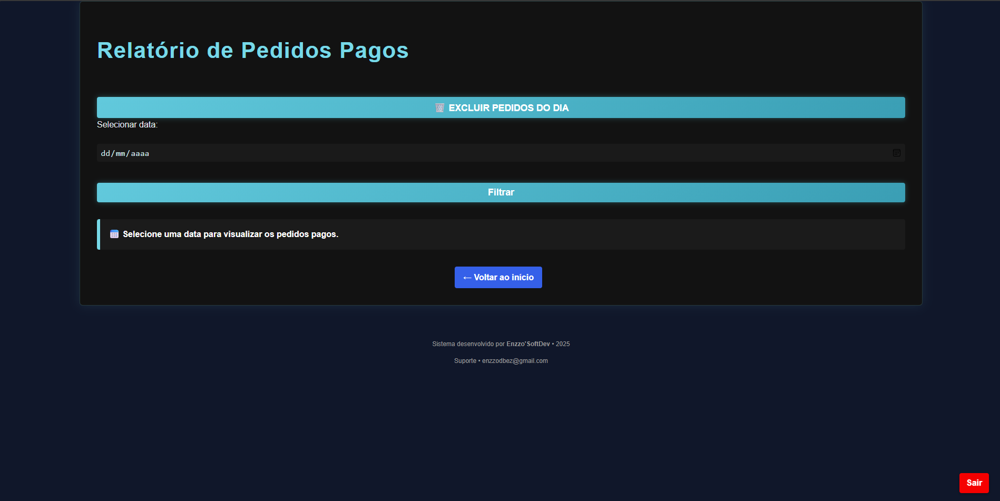
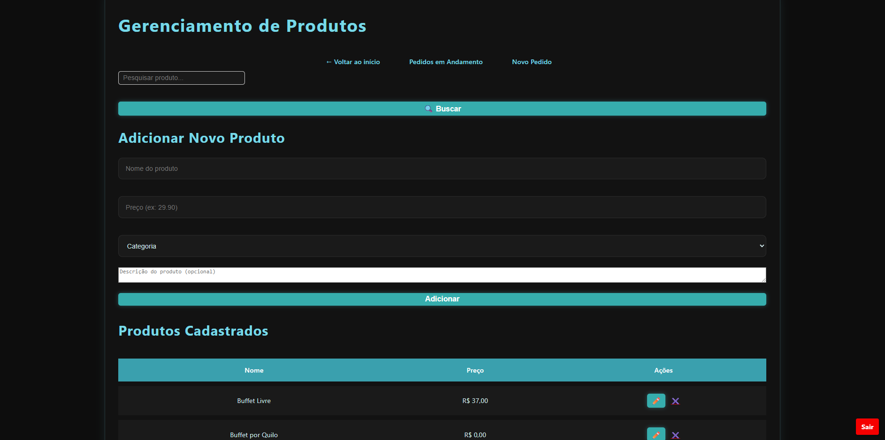
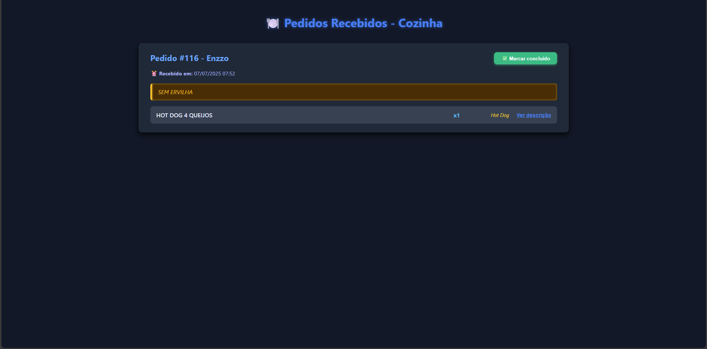
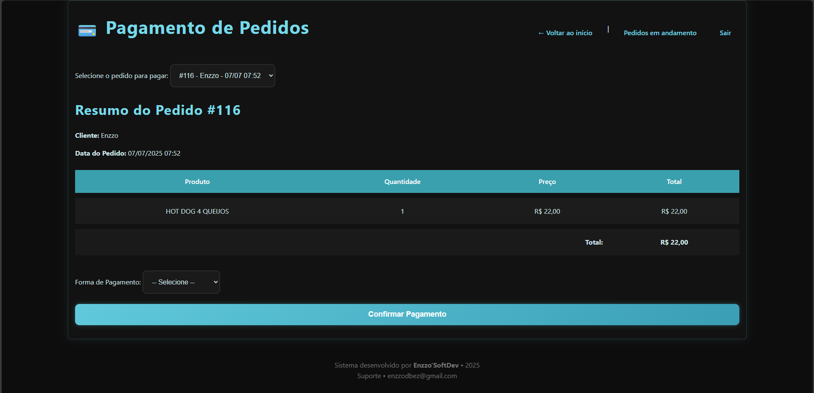
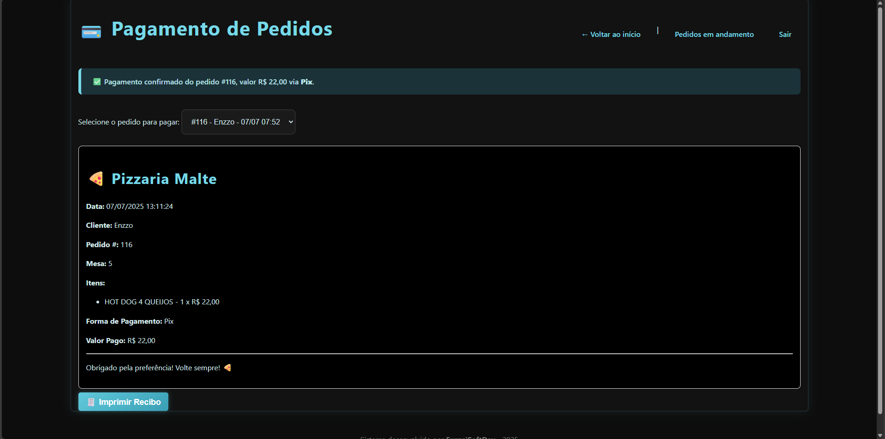
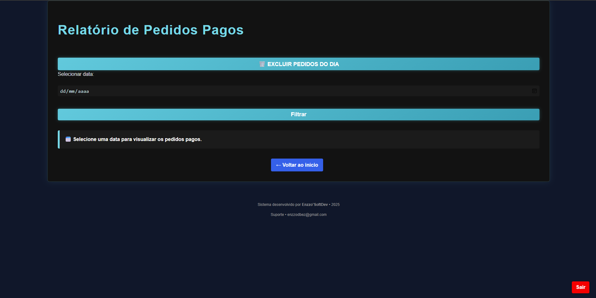
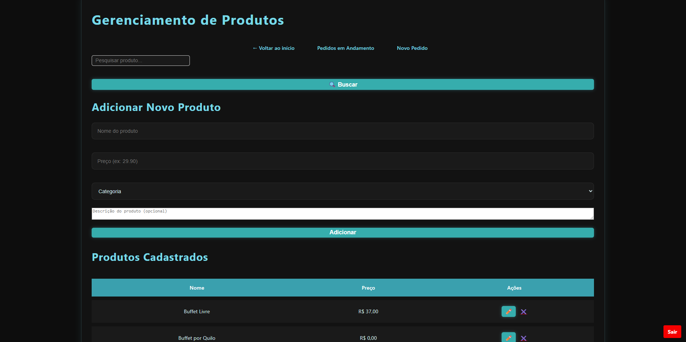
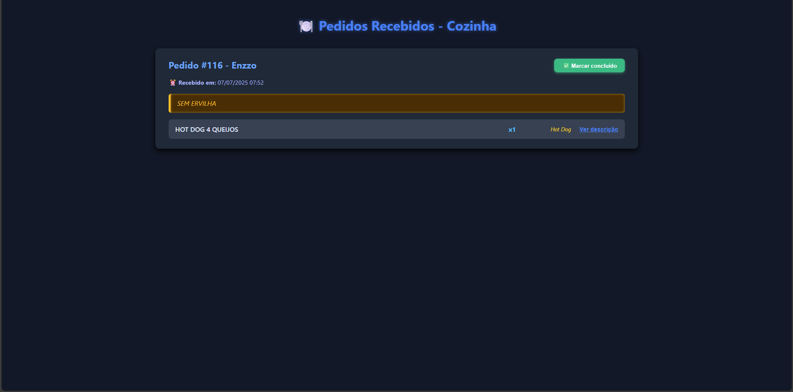
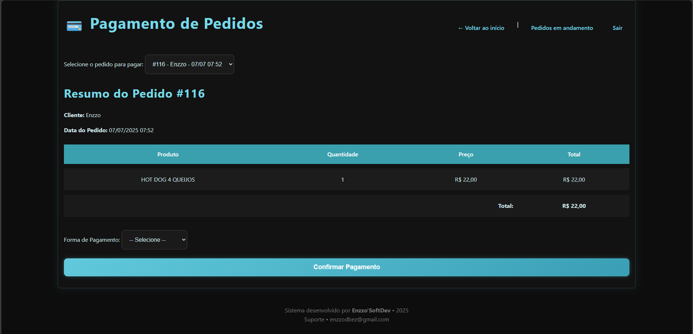
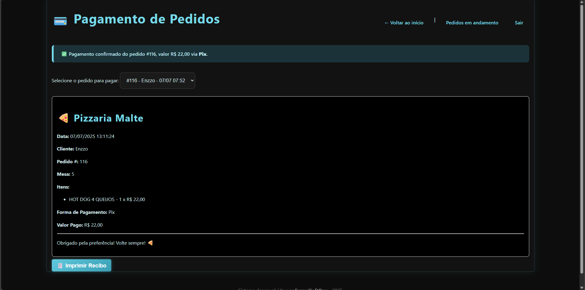